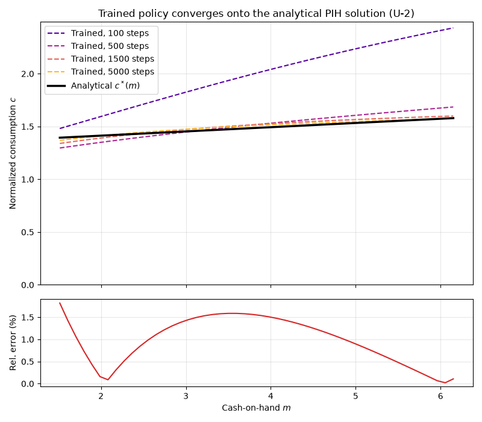

Note
Go to the end to download the full example code.
Training a Policy Network Against a Known Solution¶
This example demonstrates scikit-agent’s neural-network training pipeline by solving a model whose optimal policy is known in closed form, then comparing the trained policy against that analytical solution. Validating a solver against a known answer is the cleanest way to build trust in it before applying it to models that have no closed form.
The model: normalized permanent-income consumption (U-2)¶
The U-2 benchmark is a normalized version of the permanent-income hypothesis
(PIH) consumption-savings problem. It is one of the analytic benchmarks in
skagent.models.benchmarks; that module’s registry holds the full block
definition, the calibration, and the closed-form policy
(get_analytical_policy()) used as the target
below. Working in ratios to permanent income, the state is normalized assets
\(a\), the within-period resource is cash-on-hand
\(m = R a / \psi + 1\), and the control is normalized consumption
\(c\). The agent solves
with constant-relative-risk-aversion utility \(u\) and discount factor \(\beta\). For this calibration the optimal policy is affine in cash-on-hand,
where both the marginal propensity to consume \(\kappa = 1 - \beta\) and the normalized human wealth \(h = 1/r\) have closed forms. At this calibration \(h = 1/0.03 \approx 33.3\), so the intercept \(\kappa h\) dominates and the consumption function is nearly flat over the training range. This gives us an exact target to check the trained policy against.
Why a value head: the level-identification problem¶
A policy trained only on the Euler equation
\(u'(c_t) = \beta R \, \mathbb{E}[u'(c_{t+1})]\) pins down the slope of
the consumption function but not its level: scaling the whole policy leaves
the Euler residual nearly unchanged. A
BlockPolicyValueNet resolves this indeterminacy: it
shares one hidden backbone between a policy head and a value head, training them
together under a single optimizer with
BellmanEquationLoss. The value head anchors the level
through the Bellman equation \(V(m) = u(c) + \beta \mathbb{E}[V(m')]\),
which pins down what the Euler equation alone leaves free.
Why we re-sample the states¶
The single most important ingredient for accuracy is that the training states
are re-sampled on every gradient step, not fixed once. Maliar, Maliar, and
Winant (2021) keep the data “constantly re-sampled during training,” and it
matters: on a fixed handful of points the network drives those points’
residuals to zero while the consumption level drifts between them, and the
error stalls at several percent (and worsens with more epochs). Drawing a fresh
batch each step instead enforces the residual across the whole domain, which
pins the level and lets the error fall below one percent. The per-step optimizer
is train_block_nn(); the loop in Step 4 supplies the fresh
states and threads Adam’s momentum through. The loss combines the MMW’21
all-in-one expectation operator (two independent shock copies per state) with
the Bellman first-order-condition term.
A complementary ingredient of the full MMW’21 algorithm, simulating the model
forward so the sampled states concentrate on the ergodic set, is provided by
maliar_training_loop(); for a worked demonstration
on a model with no closed-form solution, see the companion gallery example
plot_maliar_training_loop.py.
import matplotlib.pyplot as plt
import numpy as np
import torch
import skagent.bellman as bellman
import skagent.grid as grid
import skagent.loss as loss
from skagent.ann import BlockPolicyValueNet, device, train_block_nn
from skagent.models.benchmarks import (
get_analytical_policy,
get_benchmark_calibration,
get_benchmark_model,
)
SEED = 10077693
Step 1: Load the U-2 benchmark and build a BellmanPeriod¶
get_benchmark_model returns the model block; get_analytical_policy
returns the closed-form solution we will validate against.
u2_block = get_benchmark_model("U-2")
u2_calibration = get_benchmark_calibration("U-2")
analytical_policy = get_analytical_policy("U-2")
rng = np.random.default_rng(SEED)
u2_block.construct_shocks(u2_calibration, rng=rng)
bp = bellman.BellmanPeriod(u2_block, "DiscFac", u2_calibration)
Step 3: Define the Bellman-equation loss¶
BellmanEquationLoss evaluates the residual of
\(V(m) = u(c) + \beta \mathbb{E}[V(m')]\) using the network’s own value
head. foc_weight=1.0 adds the first-order-condition term (Maliar et al.
2021, eq. 14), which speeds convergence.
bellman_loss_fn = loss.BellmanEquationLoss(
bp,
pvnet.get_value_function(),
parameters=u2_calibration,
foc_weight=1.0,
)
Step 4: Train on re-sampled states, snapshotting at increasing depths¶
Accuracy hinges on re-sampling the training states on every gradient step
rather than fixing a grid (Maliar et al. 2021, who keep the data “constantly
re-sampled during training”). A fresh draw each step enforces the residual
across the whole domain; a fixed handful of points lets the network drive
their residuals to zero while the consumption level drifts between them.
Each step draws n_batch normalized-asset points with two independent
permanent-income shock copies (the all-in-one operator), and threads the
optimizer back in so Adam keeps its momentum across steps.
We evaluate the policy on a fixed grid at several training depths, so the plot can show the consumption function converging toward the analytical solution as training proceeds rather than only its final fit. The depths are checkpoints of one continuous run (the optimizer is threaded through), so snapshotting only observes training, it does not perturb it.
# Evaluation grid, held fixed across depths. The income shock is held at its
# mean so the slice is deterministic; cash-on-hand is then m = R a + 1.
n_test = 50
test_a = torch.linspace(0.5, 5.0, n_test, device=device)
test_states = {"a": test_a}
test_shocks = {"psi": torch.ones(n_test, device=device)}
test_m = (u2_calibration["R"] * test_a / test_shocks["psi"] + 1.0).cpu().numpy()
def consumption_on_test_grid(net):
decision_fn = net.get_decision_function()
c = decision_fn(test_states, test_shocks, u2_calibration)["c"]
return c.detach().cpu().numpy()
n_batch = 256
checkpoints = [100, 500, 1500, 5000] # cumulative SGD steps to snapshot at
snapshots = {}
optimizer = None
final_loss = float("nan")
step = 0
for target in checkpoints:
while step < target:
train_grid = grid.Grid.from_dict(
{
"a": torch.empty(n_batch, device=device).uniform_(0.5, 5.0),
"psi_0": torch.ones(n_batch, device=device),
"psi_1": torch.ones(n_batch, device=device),
}
)
pvnet, final_loss, optimizer = train_block_nn(
pvnet,
train_grid,
bellman_loss_fn,
epochs=1,
lr=1e-3,
optimizer=optimizer,
verbose=False,
)
step += 1
snapshots[target] = consumption_on_test_grid(pvnet)
trained_net = pvnet
print(f"Final training loss: {final_loss:.3e}")
Final training loss: 3.487e-06
Step 5: Compare the deepest-trained policy to the analytical solution¶
At the deepest snapshot we report the pointwise relative error against the closed-form policy. With re-sampled training and the value head anchoring the level, the mean relative error falls to about one percent (here 0.98%), an order of magnitude tighter than the several-percent floor of Euler-only training on this unconstrained model.
analytical_np = (
analytical_policy(test_states, test_shocks, u2_calibration)["c"]
.detach()
.cpu()
.numpy()
)
trained_np = snapshots[checkpoints[-1]]
rel_error_np = np.abs(trained_np - analytical_np) / (analytical_np + 1e-8)
print(f"Mean relative error: {rel_error_np.mean():.2%}")
print(f"Max relative error: {rel_error_np.max():.2%}")
Mean relative error: 0.98%
Max relative error: 1.82%
Step 6: Plot the policy converging onto the analytical solution¶
Consumption is a function of cash-on-hand m, so we plot against m (not assets a), and start the consumption axis at 0 so the level is shown honestly. Each dashed curve is the trained policy after a given number of SGD steps: as training deepens the curves march onto the closed-form linear PIH rule, making it visible that the error keeps shrinking with training rather than stalling. The lower panel shows the pointwise relative error at the deepest snapshot.
fig, (ax_policy, ax_err) = plt.subplots(
2, 1, figsize=(8, 7), sharex=True, height_ratios=[3, 1]
)
depth_colors = plt.cm.plasma(np.linspace(0.15, 0.85, len(checkpoints)))
for color, steps in zip(depth_colors, checkpoints):
ax_policy.plot(
test_m,
snapshots[steps],
"--",
color=color,
linewidth=1.5,
label=f"Trained, {steps} steps",
)
ax_policy.plot(test_m, analytical_np, "k-", linewidth=2.5, label="Analytical $c^*(m)$")
ax_policy.set_ylabel("Normalized consumption $c$")
ax_policy.set_ylim(bottom=0.0)
ax_policy.set_title("Trained policy converges onto the analytical PIH solution (U-2)")
ax_policy.legend()
ax_policy.grid(True, alpha=0.3)
ax_err.plot(test_m, rel_error_np * 100.0, "C3-", linewidth=1.5)
ax_err.set_xlabel("Cash-on-hand $m$")
ax_err.set_ylabel("Rel. error (%)")
ax_err.grid(True, alpha=0.3)
fig.tight_layout()
plt.show()

Total running time of the script: (0 minutes 20.538 seconds)